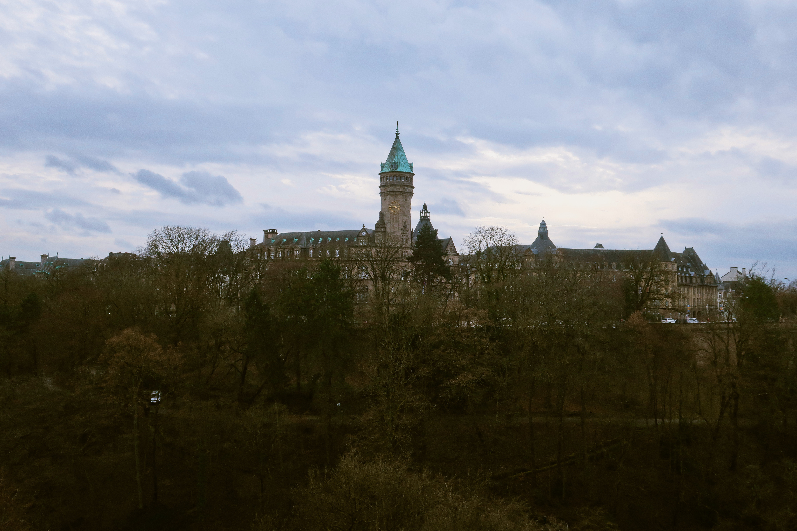
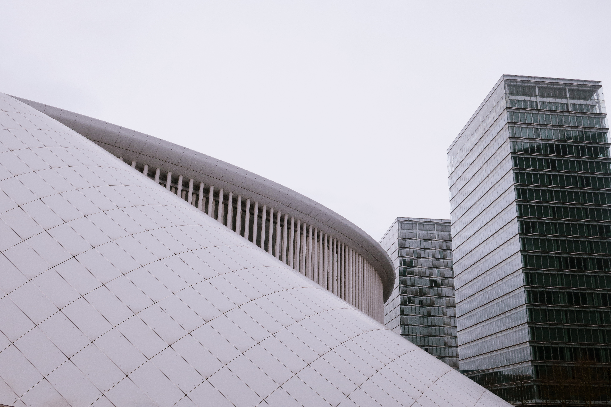
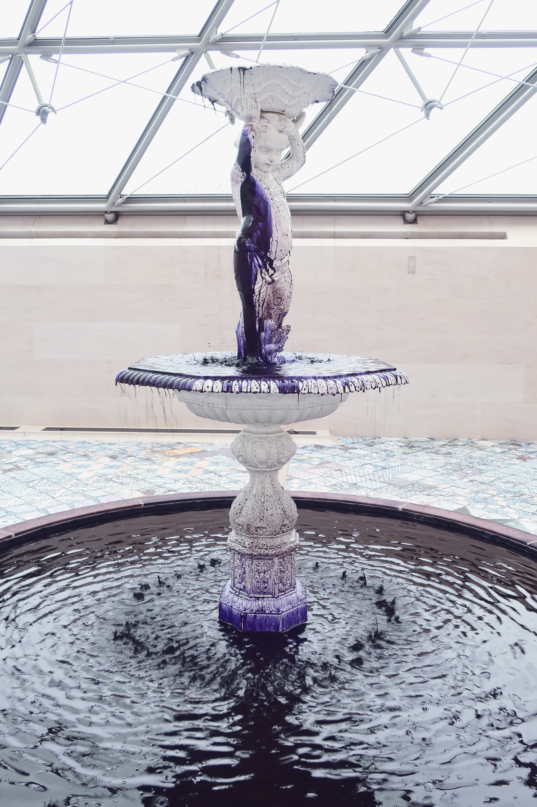
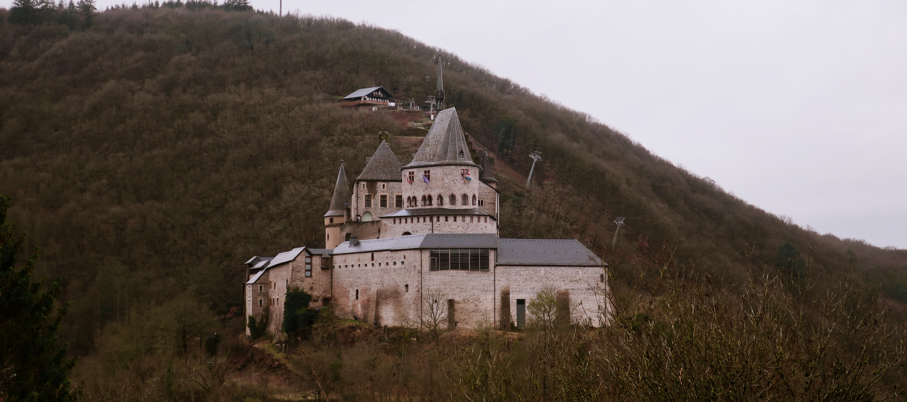
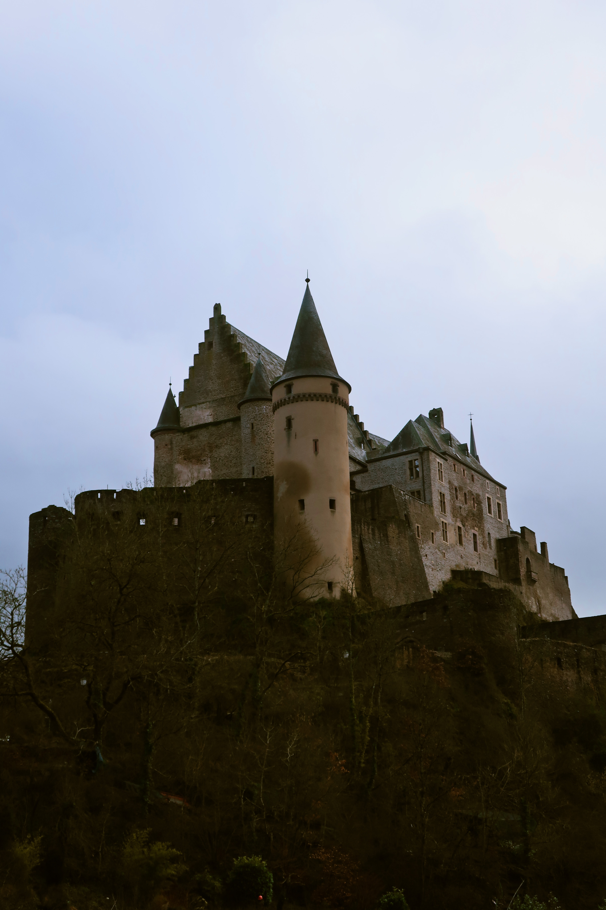
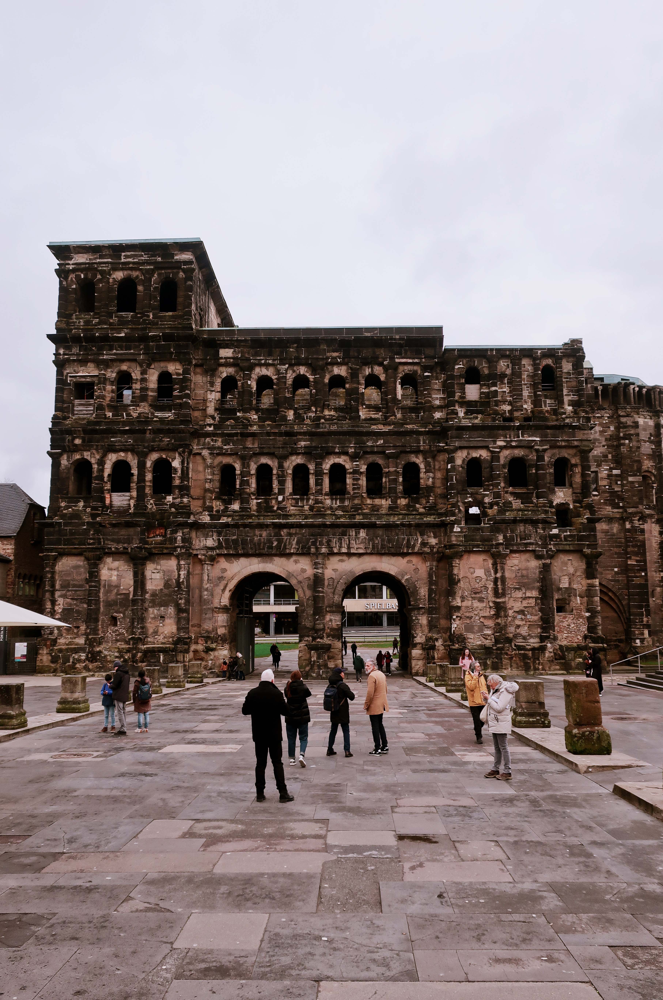
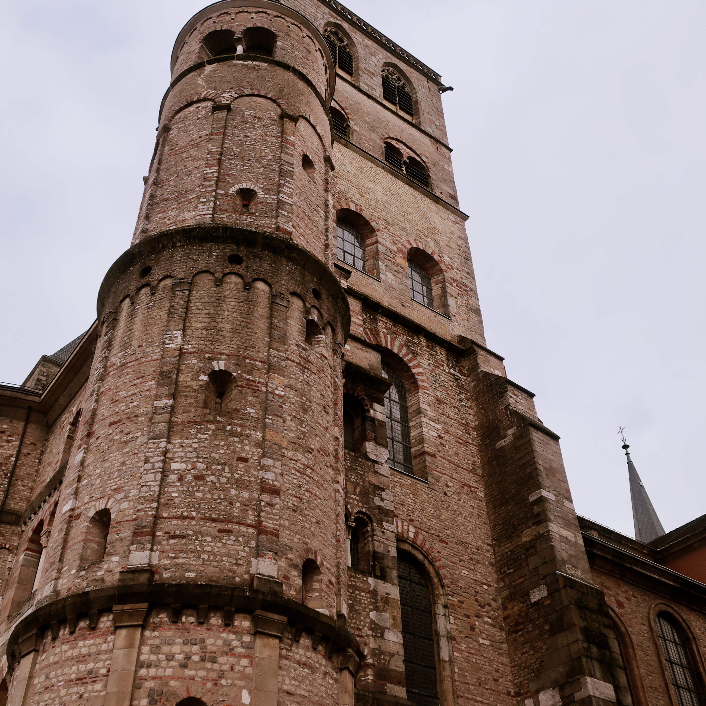

Exploring Luxembourg: Our 3-Day Adventure in February 2024

In February 2024, we embarked on a delightful 3-day trip to Luxembourg, exploring its charming capital and picturesque surroundings. Our journey began in Luxembourg City, where we wandered through the historic old town, admiring the impressive Grand Ducal Palace and the breathtaking views from the Chemin de la Corniche, often called 'the most beautiful balcony of Europe.'
We visited the fascinating Bock Casemates, an extensive network of underground tunnels, and enjoyed the serene atmosphere of the Grund district, with its quaint streets and charming cafes. The Notre-Dame Cathedral and the Place d'Armes were also highlights of our exploration of the city.
On the second day, we took a trip to the enchanting town of Vianden, home to the stunning Vianden Castle. The castle's medieval architecture and rich history captivated us, and the panoramic views of the surrounding landscape were truly breathtaking.
We continued our journey to the Mosel region, known for its picturesque vineyards and charming villages. We enjoyed a leisurely drive along the Mosel River, stopping to sample some local wines and take in the beautiful scenery.
On our final day, we crossed the border into Germany to visit the historic city of Trier. Here, we explored the ancient Roman monuments, including the impressive Porta Nigra and the stunning Trier Cathedral. The rich history and beautiful architecture of Trier made it a perfect end to our short but memorable trip.
This 3-day adventure through Luxembourg and its neighboring regions offered a perfect blend of history, culture, and natural beauty, providing unforgettable experiences at every turn. From the historic streets of Luxembourg City to the enchanting landscapes of the Mosel Valley and the ancient charm of Trier, this trip was truly a memorable journey.







 Bordeaux
Bordeaux
 Tallin & Riga Christmas Markets
Tallin & Riga Christmas Markets
 Barcelona, Vic & Girona
Barcelona, Vic & Girona
 Skopje, North Macedonia
Skopje, North Macedonia